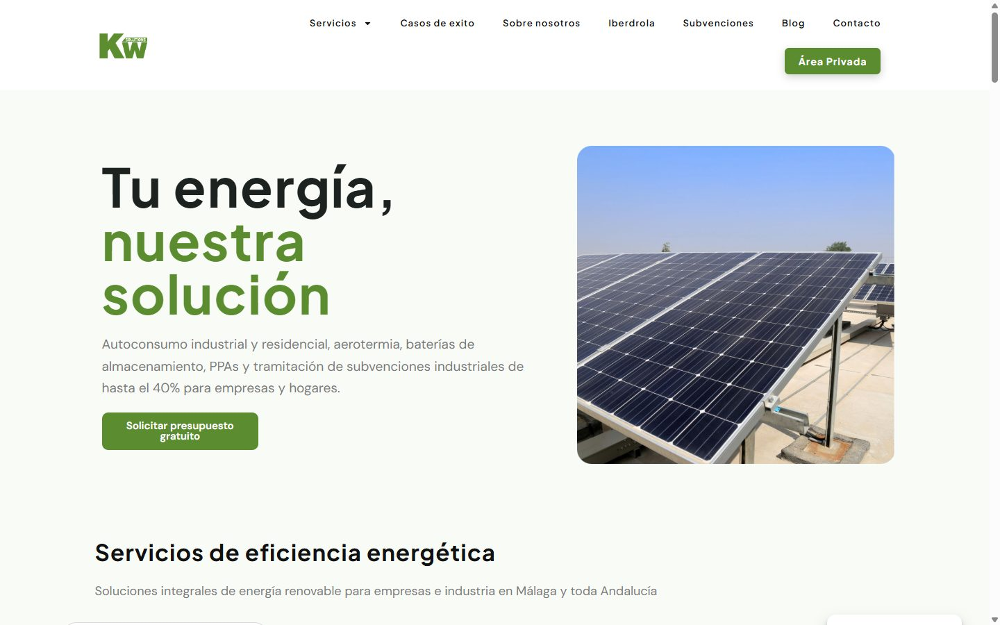

Rol
Diseño · Montaje · Plugin
Web del grupo en kwsolutions.es. Misma lógica que Mona: que el equipo pueda editar sin pedir ayuda cada dos por tres, y un plugin a medida donde WordPress a pelo no llegaba.

KW Solutions es la pata energética del grupo. Necesitaban una web que aguantara contenido real (servicios, oficinas, campañas) y que el equipo pudiera tocarla sin romper nada.
Misma idea que en Mona: no entregar una web cerrada. Entregar una herramienta que el cliente (o el equipo) puede llevar solo.